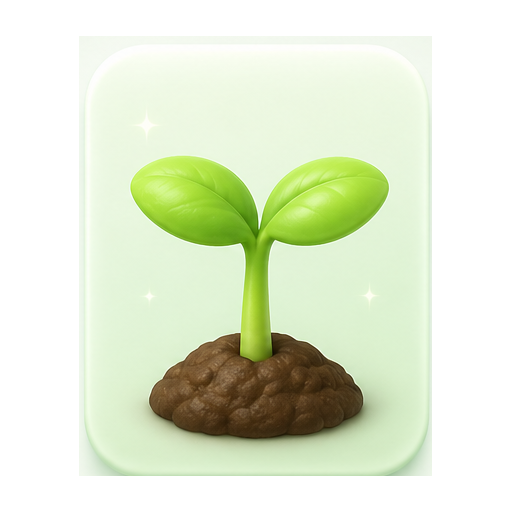
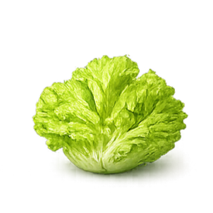
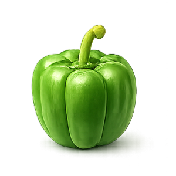

Beginner Cultivation Guide처음 시작하는
반려작물 재배가이드
작물 키우기는 어렵지 않습니다. 흙, 햇빛, 물, 공간만 이해하면 집에서도 충분히 나의 첫 작물을 시작할 수 있습니다.
작물 키우기 4단계
처음에는 복잡한 지식보다 기본 조건을 안정적으로 맞추는 것이 가장 중요합니다.
흙은 어떤 걸로?
초보자는 상토 또는 원예용 배양토를 추천합니다. 배수성과 보수성이 적당하고 기본 영양분이 포함되어 있어 처음 시작하기 쉽습니다.
추천: 원예용 배양토 + 배수 구멍 있는 화분
최소 공간
상추, 바질, 방울토마토 같은 작물은 30cm × 30cm 정도의 공간으로도 시작할 수 있습니다. 베란다, 창가, 책상 옆도 가능합니다.
처음에는 작은 화분 1개부터 시작해도 충분합니다.
햇빛
대부분의 작물은 하루 4~6시간 정도의 빛이 필요합니다. 햇빛이 부족하다면 창가 가까이에 두거나 식물등을 활용할 수 있습니다.
잎이 길게 웃자라면 빛이 부족하다는 신호입니다.
물주기
물은 매일 주는 것이 아니라 흙 표면이 말랐을 때 충분히 주는 것이 좋습니다. 과습은 뿌리 썩음의 원인이 될 수 있습니다.
손가락으로 흙을 만져보고 말랐을 때 물을 주세요.
처음 키우기 좋은 작물
실패 확률이 낮고 성장 변화가 잘 보이는 작물부터 시작하면 관리 습관을 만들기 쉽습니다.

상추
성장 속도가 빠르고 실내·베란다 재배가 쉬운 대표 초보 작물입니다.
방울토마토
꽃과 열매가 생기는 과정이 뚜렷해 관찰과 수확의 재미가 큽니다.
바질
향이 좋고 공간을 적게 차지해 실내에서 키우기 좋습니다.

고추
햇빛만 충분하면 비교적 잘 자라고 수확량도 좋은 작물입니다.
흙은 어느 정도 깊이로 파야 할까요?
너무 깊게 심으면 싹이 올라오기 어렵고, 너무 얕게 심으면 뿌리가 안정적으로 자리 잡기 어렵습니다.
심는 깊이 감각 잡기
작물마다 차이는 있지만, 처음에는 씨앗 크기와 뿌리 위치를 기준으로 생각하면 쉽습니다.
씨앗
1~2cm씨앗 크기의 약 2~3배 깊이가 적당합니다. 너무 깊게 심으면 발아가 늦어질 수 있습니다.
모종
뿌리만뿌리 부분이 흙에 잘 덮이도록 심고, 줄기까지 과하게 묻지 않는 것이 좋습니다.
감자류
10~15cm뿌리와 덩이줄기가 자랄 공간이 필요하므로 일반 씨앗보다 깊게 심는 편입니다.
Re:af 성장 단계
재배일지와 AI 진단 기록이 쌓이면 작물 성장 단계와 건강도 변화로 이어집니다.
Re:af AI와 함께 키우기
초보 재배자의 어려움을 AI 진단, 재배일지, 건강도 시스템으로 연결합니다.
아니요. 대부분의 작물은 흙 표면이 말랐을 때 충분히 주는 것이 좋습니다. 매일 조금씩 주는 방식은 오히려 과습을 만들 수 있습니다.
가능합니다. 햇빛이 드는 창가나 작은 선반에서도 시작할 수 있으며, 빛이 부족하다면 식물등을 함께 사용할 수 있습니다.
상추와 바질을 추천합니다. 성장 속도가 빠르고 관리가 쉬워 처음 재배 습관을 만들기에 좋습니다.
바로 버릴 필요는 없습니다. 먼저 병반이 퍼지는지 관찰하고, Re:af AI 진단으로 질병 가능성을 확인한 뒤 대처 가이드를 참고하는 것이 좋습니다.
잎 색, 줄기 상태, 흙의 습도, 성장 속도를 함께 확인합니다. Re:af에서는 사진 기록과 건강도 변화를 통해 관리 흐름을 확인할 수 있습니다.
나의 첫 반려작물,
오늘 시작해보세요
작물 등록부터 AI 진단, 재배일지, 성장 기록까지 Re:af가 함께합니다.